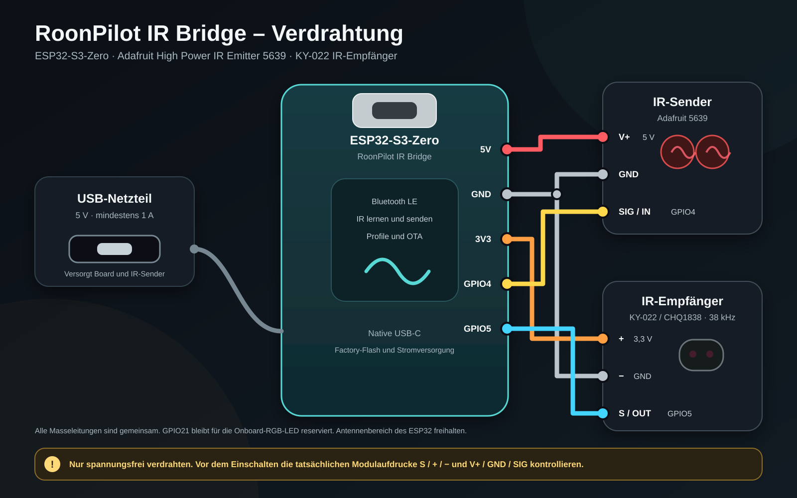
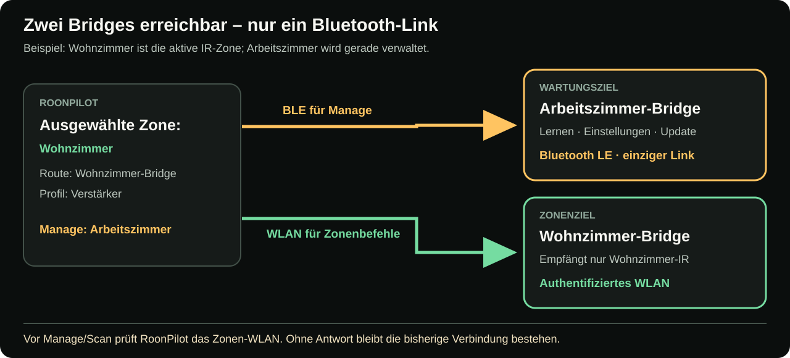
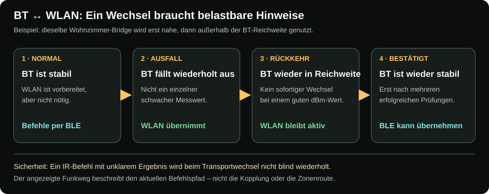
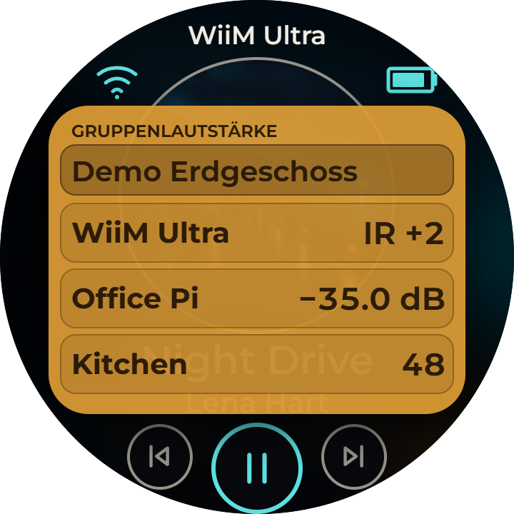
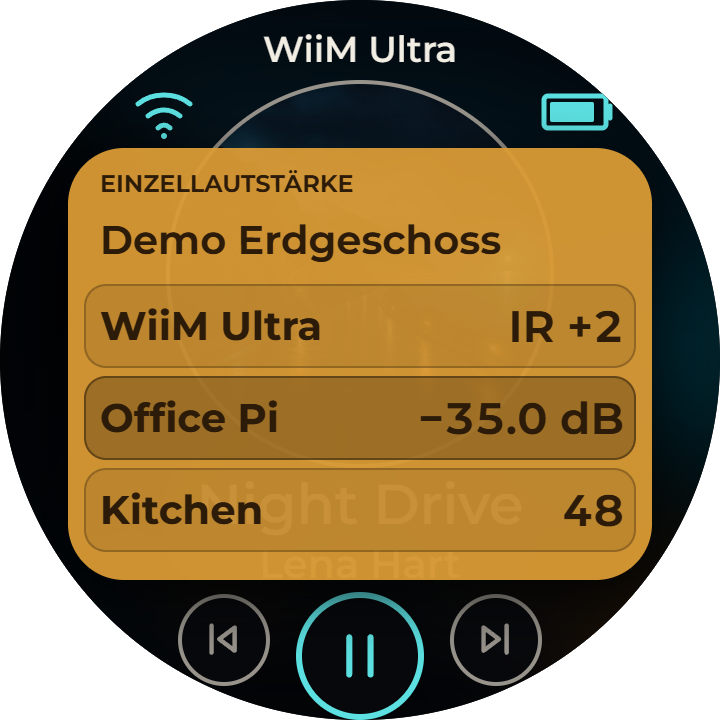
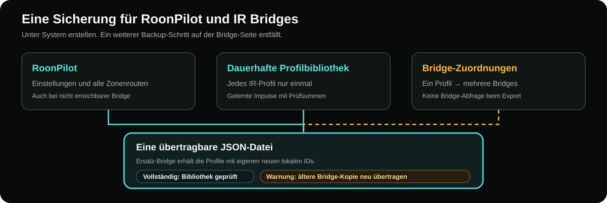

Einrichtung und Bedienung
Vollständige Bridge-Anleitung
Diese Anleitung beginnt beim unversorgten, nackten Board und führt bis zu gelernten IR-Profilen, zonenbezogenem Routing, Sicherung und signierten Onlineupdates durch RoonPilot.
1. Aufgabe der Bridge
RoonPilot IR Bridge ist eine optionale ESP32-S3-Erweiterung für Geräte, deren Lautstärke oder Stromzustand Roon nicht direkt steuern kann. RoonPilot bleibt die Bedienoberfläche; die Bridge empfängt authentifizierte Lautstärke-, Mute- und Power-Aktionen und sendet die gelernten Befehle der Original-Infrarotfernbedienung.
Der Steuerweg wird für jede Roon-Zone getrennt gewählt. Eine Zone kann die native Roon-Lautstärke nutzen, eine zweite einen DAC per Infrarot regeln und eine weitere die Lautstärkeregelung bewusst deaktivieren. Wird Bridge & Bluetooth abgeschaltet, bleiben nach dem RoonPilot-Neustart Bridge-Scanning, Bluetooth und sämtliche Bridge-Hintergrundaufgaben aus.
Die vollständige Bridge-Oberfläche folgt der globalen Deutsch/Englisch-Einstellung von RoonPilot. Physische Kennungen sowie selbst vergebene Zonen-, Geräte- und Profilnamen bleiben exakt wie eingegeben.
Es gibt kein zweites Produkt zu verwalten.
RoonPilot übernimmt Bridge-Hauptschalter, verschlüsselten BLE-Scan und Pairing, optionale WLAN-Provisionierung, laufenden Transportstatus, IR-Profile, geführtes Lernen, Befehlstests, Zonenrouting, Power-/Mute-Tasten, die gemeinsame Sicherung und signierte Onlineupdates. Die Bridge selbst benötigt weder Cloudkonto noch eine eigene Alltags-Weboberfläche.
2. Hardware und sichere Verdrahtung
Der validierte Aufbau nutzt das Waveshare ESP32-S3-Zero mit 4 MB Flash und 2 MB PSRAM, einen AZ-Delivery-KY-022/CHQ1838-Empfänger, den Adafruit High Power Infrared LED Emitter 5639 und USB-Stromversorgung.
S, +, −, V+, GND und SIG auf den gelieferten Modulen ablesen. Kompatible KY-022-Boards besitzen nicht immer dieselbe physische Pinreihenfolge.
| Bridge-Anschluss | Ziel | Aufgabe |
|---|---|---|
| 5 V | Adafruit 5639 V+ | Versorgung des Hochleistungssenders direkt von USB, nicht vom 3,3-V-Regler |
| GPIO4 | Sender SIG / S | 3,3-V-IR-Modulationssignal |
| 3V3 | KY-022 + | Hält dessen Digitalausgang im Eingangsbereich des ESP32 |
| GPIO5 | KY-022 S / OUT | Demoduliertes IR-Empfangssignal |
| GND | Beide Module | Zwingend gemeinsame Masse |
Das Adafruit-Board besitzt einen eigenen Transistortreiber und akzeptiert 3–5 V Versorgung sowie ein 3–5-V-Logiksignal. Bei 5 V können die beiden LEDs gepulst zusammen rund 400 mA aufnehmen. Deshalb ist ein stabiles USB-Netzteil mit 5 V / mindestens 1 A nötig; die LEDs dürfen niemals direkt an einem GPIO hängen. Nur kurze Fernbedienungsimpulse senden und den Keramikantennenbereich des ESP32 von Modulen, Kabeln und Metall freihalten.
Druckbares Bridge-Gehäuse
Zum Projekt gehören ein druckbarer Gehäusekörper, Deckel, eine IR-Senderkappe und zwei alternative Fußlängen. Einen vollständigen Satz aus vier gleich langen Füßen verwenden. Die Fotos zeigen die getestete äußere und innere Anordnung, ersetzen aber keine elektrische Prüfung.


 Bridge_Cube.stlGehäusekörper · einmal drucken
Bridge_Cube.stlGehäusekörper · einmal drucken
 deckel.stlDeckel · einmal drucken
deckel.stlDeckel · einmal drucken
 ir_sender_kappe.stlSenderkappe · einmal drucken
ir_sender_kappe.stlSenderkappe · einmal drucken
 fuss_1x_drucken_4x.stlLängerer Fuß bei langem USB-C-Stecker · viermal
fuss_1x_drucken_4x.stlLängerer Fuß bei langem USB-C-Stecker · viermal
 fuss_1x_drucken_4x_KURZ.stlKurzer Fuß bei kompaktem USB-C-Stecker · viermal
fuss_1x_drucken_4x_KURZ.stlKurzer Fuß bei kompaktem USB-C-Stecker · viermal
Verdrahtung und beaufsichtigte Tests am offenen Aufbau vor dem Schließen vollständig abschließen. Möglichst ein USB-C-Kabel mit kurzem Steckergehäuse verwenden; falls der Stecker dennoch zu lang ist, vier Exemplare des längeren Fußes fuss_1x_drucken_4x.stl einsetzen. Vor dem Aufsetzen des Deckels USB trennen, Adafruit-Sender und optionalen Lernempfänger auf ihre Öffnungen ausrichten, Kabel von Antenne und Kontakten fernhalten und anschließend Reichweite sowie Temperatur am geschlossenen Gehäuse erneut prüfen. Die separate Druck- und Gehäuseanleitung enthält den vollständigen Montageablauf und die Modellmaße.
Statusfarben der Bridge-LED
Die kleine RGB-LED sitzt auf dem ESP32-S3-Zero. Im normalen Betrieb ist sie aus. Für den dauerhaften Verbindungsstatus die Bridge-Seite in RoonPilot verwenden; eine dunkle LED bedeutet nicht, dass die Bridge ausgeschaltet oder getrennt ist.
| LED-Muster | Bedeutung |
|---|---|
| Langsam blau pulsierend | Ein Pairingfenster ist geöffnet. |
| Zweimal kurz blau | Verschlüsselte Bluetooth-Kopplung erfolgreich. |
| Mehrfach kurz blau für etwa 1,5 Sekunden | „Bridge identifizieren“ wurde in RoonPilot ausgelöst. |
| Orange pulsierend | Die Bridge wartet auf ein IR-Signal oder zeichnet es zum Lernen auf. |
| Zweimal kurz grün | Zwei passende IR-Aufnahmen wurden gespeichert. Nach violettem Pulsieren: Firmware angenommen, Neustart folgt. |
| Zweimal kurz rot | IR-Lernen fehlgeschlagen oder abgelaufen. Nach violettem Pulsieren: Firmwareübertragung oder -prüfung fehlgeschlagen. |
| Violett pulsierend | Firmware wird übertragen oder geprüft. Stromversorgung nicht trennen. |
Nach einem kurzen Bestätigungssignal geht die LED wieder aus oder zeigt ein noch offenes Pairingfenster an. Wird das IR-Lernen abgebrochen, endet das orange Signal ohne rote Fehlermeldung.
3. Erste Factory-Installation
- Verdrahtung bei abgezogenem USB vollständig prüfen. Beim allerersten Boardtest die IR-Module abziehen, solange deren Pinbeschriftung nicht zweifelsfrei feststeht.
- Den Bridge-Webinstaller nach seiner Veröffentlichung in einem aktuellen Desktop-Chrome oder Edge öffnen. Firefox, Safari, iPhone und iPad besitzen die erforderliche Web-Serial-Schnittstelle nicht.
- Das Bridge-Board direkt per USB anschließen. Arduino Serial Monitor, ESP-IDF Monitor und alle anderen Programme schließen, die den Port verwenden.
- Im Geräteauswahldialog des Webinstallers unter Windows USB JTAG/serial debug unit (
COM…) beziehungsweise unter macOS USB JTAG/serial debug unit (cu.usbmodem…) wählen. Entscheidend ist der Name vor der Klammer. Eine vorherige Suche im Betriebssystem ist nicht nötig; der geöffnete Dialog erkennt ein abgezogenes und wieder angeschlossenes Gerät sofort. USB serial bezeichnet dort einen klassischen ESP32 und ist nicht die Bridge. Während der Installation nur die Bridge per USB anschließen. - Beide Sicherheitsbestätigungen akzeptieren und den Installer starten. USB bis zum vollständigen Abschluss von Installation und Neustart verbunden lassen.
Nach erfolgreicher Factory-Installation erzeugt die Bridge eine neue zufällige Kennung im Format RPB-XXXX-XXX und erlaubt die erste verschlüsselte Kopplung. Während des offenen Pairings pulsiert die RGB-LED langsam blau.
4. Bridge mit RoonPilot koppeln
- Die lokale RoonPilot-Weboberfläche öffnen und IR Bridge auswählen.
- Bridge & Bluetooth aktivieren, speichern und RoonPilot neu starten lassen. Bei deaktivierter Funktion wird kein Bridge-Bluetooth-Stack gestartet.
- Scan for Bridges wählen und die angezeigte
RPB-…-Kennung mit der gewünschten Bridge vergleichen. - Diese Kennung auswählen und das Pairing in RoonPilot bestätigen. Kein unbekanntes Gerät in der Nähe koppeln.
- Auf Encrypted and bonded, die installierte Bridge-Version und Ready warten. Zwei kurze blaue LED-Signale bestätigen den Erfolg; danach geht die LED aus.
- Vor dem Lernen von Profilen Test connection ausführen.
Für das normale Pairing ist kein von außen erreichbarer BOOT-Taster nötig. Hat später nur eine Seite ihre Bond-Daten verloren, die Bridge innerhalb von 15 Sekunden dreimal aus- und einschalten. Sie löscht dabei nur den Bond und öffnet das Pairing für fünf Minuten; Kennung und IR-Profile bleiben erhalten.

Gespeichert ist nicht gleich gefunden
Saved IR Bridges zeigt die dauerhaften Kopplungen (bis zu vier). Pair a Bridge zeigt nur Geräte, die beim letzten zehnsekündigen BLE-Scan gehört wurden. „1 found“ kann also korrekt neben „2 / 4“ gespeicherten Bridges stehen. Kommt eine Bridge wieder in BLE-Reichweite, Scan for Bridges erneut drücken. Eine fehlende Fundkarte löscht weder Pairing noch WLAN-Steuerung.

Automatische Zonensteuerung und Manage
Die ausgewählte Roon-Zone bestimmt immer die benötigten IR-Routen. Bei einer Gruppe gehören dazu alle zugeordneten Bridges ihrer physischen Mitglieder. Manage öffnet eine andere gespeicherte Bridge nur für Wartung, Lernen, Diagnose oder Update; es ändert keine Zonenroute. Es gibt höchstens einen BLE-Link, aber mehrere getrennt authentifizierte WLAN-Wege. Bevor Manage oder Scan den BLE-Link beansprucht, prüft RoonPilot, dass aktive IR-Routen erreichbar bleiben, und lehnt einen unsicheren Wechsel ab. Nach der Wartung Return to zone control wählen; ohne Aktivität endet die Wartungsauswahl automatisch nach fünf Minuten.



5. Optionaler WLAN-Fallback
BLE bleibt die bevorzugte Verbindung. Soll die Bridge in einem anderen Zimmer stehen, bei verbundener und gebondeter BLE-Bridge Allow Wi-Fi fallback aktivieren. RoonPilot überträgt dann einmalig seine aktuellen 2,4-GHz-Zugangsdaten und einen neuen 256-Bit-Anwendungsschlüssel durch die verschlüsselte BLE-Verbindung.
- Schalter aktivieren und Provisionierung bestätigen.
- Auf Connected and verified, Bridge-IP und Signalstärke warten.
- Mit Test Wi-Fi path einen authentifizierten WLAN-Befehl erzwingen, obwohl BLE verfügbar ist.
Die Befehle nutzen AES-256-GCM-Authentifizierung und Wiederholungsschutz. Ein Retry darf nicht unbemerkt einen zweiten IR-Befehl auslösen. Fehlerhafte Zugangsdaten werden nicht behalten, BLE bleibt der Rettungsweg und bei ausgeschaltetem Fallback startet das WLAN-Funkteil der Bridge nach einem Neustart nicht. RoonPilot und Bridge müssen ohne Client-/AP-Isolation im selben lokalen Netz liegen.

Ein schwankender dBm-Wert allein löst keine Umschaltung aus. RoonPilot hält einen funktionierenden Weg stabil, wechselt erst nach wiederholt bestätigten Verbindungsproblemen auf das bereits eingerichtete WLAN und kehrt bei neuer BLE-Nähe nicht sofort zurück. Ein IR-Befehl mit unklarem Ergebnis wird beim Wechsel nicht blind wiederholt.


6. IR-Profil erstellen und lernen
Bei mehreren Bridges benötigt nur eine einen IR-Empfänger. Mit dieser Lern-Bridge lassen sich die Profile für alle Zonen anlernen. RoonPilot speichert sie unabhängig von der Lern-Bridge und überträgt sie beim Speichern einer Zonenroute auf die gewünschte Ziel-Bridge – auch wenn diese keinen Empfänger besitzt.
- Unter IR profiles ein eindeutig benanntes Profil wie
RME ADI-2 DACanlegen und auf RoonPilot speichern. Dafür ist noch keine Bridge nötig. Üblicherweise 38 kHz Träger und 33 % Duty beibehalten, sofern das Gerät nichts anderes benötigt. - Dieses Profil und eine Lern-Bridge mit IR-Empfänger auswählen. Sie muss nicht die spätere Ziel-Bridge sein. Der Lernmodus reserviert sie; solange er läuft, sendet sie keine normalen IR-Befehle.
- Neben Volume up auf Learn drücken. Während des Wartens pulsiert die Lern-Bridge-LED orange.
- Originalfernbedienung auf den KY-022 richten und die angeforderte Taste einmal kurz und sauber drücken.
- Bei Aufforderung denselben Druck wiederholen. Nur übereinstimmende Aufnahmen werden akzeptiert.
- Zwei kurze grüne Signale bedeuten Analyse und Speicherung; zwei rote Signale bedeuten Timeout, Abweichung oder Fehler.
- Die übrigen benötigten Tasten anlernen und mit Auf RoonPilot speichern die bestätigten Befehle in die dauerhafte Bibliothek übernehmen. Lernvorgang verwerfen lässt das Bibliotheksprofil unverändert. Erst nach Ende des Lernmodus und der Übertragung per Zonenroute das echte Gerät testen; während des Lernens sind normale IR-Sendebefehle gesperrt. Ein nicht beendeter Lernmodus läuft spätestens nach zehn Minuten automatisch ab.
Bekannte NEC- und Extended-NEC-Signale behalten Protokoll- und Repeat-Informationen; Unbekanntes bleibt als verlustfreies Roh-Timing nutzbar. Duty ist der aktive Anteil jedes Trägerzyklus – weder Tastendauer noch Wiederholungszahl. Beim Standardwert 33 % ist die LED eines 38-kHz-Trägers etwa 8,7 µs von jeweils 26,3 µs eingeschaltet.


7. Jede Zone zuordnen
In Zone Management für jede sichtbare Zone einen Lautstärkeweg auswählen:
- Roon / endpoint volume sendet die native absolute oder dB-Lautstärke des Endpunkts.
- External IR Bridge sendet Volume up/down des ausgewählten Profils.
- Disabled verwirft Lautstärkeaktionen bewusst.
Die Encoder-Schrittzahl wird pro Zone getrennt eingestellt. 2 Steps bedeutet zwei vollständige gelernte IR-Tastendrücke pro RoonPilot-Rastung, nicht einen künstlich gehaltenen Befehl. Beim validierten RME-Profil ergeben zwei physische 0,5-dB-Schritte daher exakt eine 1,0-dB-RoonPilot-Rastung.
Mute und Power lassen sich ebenfalls pro Zone aktivieren. Play/Pause, Previous und Next bleiben native Roon-Aktionen. Da eine inkrementelle IR-Steuerung keinen absoluten Wert zurückmeldet, zeigt das Display einen relativen + / −-Aktionszähler und erfindet keinen Lautstärkewert.
Für External IR Bridge eine gekoppelte Bridge und ein benanntes Profil aus der RoonPilot-Bibliothek wählen. Save überträgt und prüft das Profil automatisch auf der Ziel-Bridge und aktiviert erst danach die Route. Dasselbe Profil kann mehreren Bridges zugeordnet werden; ihre numerischen Profilplätze sind voneinander unabhängig.
Roon-Gruppen und mehrere Bridges
Eine ausgewählte Roon-Gruppe ersetzt die gespeicherten Routen ihrer Mitglieder nicht. RoonPilot löst jeden physischen Ausgang auf und kann deshalb bei derselben Ringbewegung native Zahlenwerte, native dB-Werte, relative Roon-Befehle und IR-Befehle über mehrere Bridges senden. Alle von der Gruppe benötigten Bridges werden überwacht; eine unerreichbare Bridge markiert nur ihr eigenes Mitglied als OFFLINE und führt niemals still auf ein anderes Profil zurück.
Das erste Ringraster öffnet den Gruppenmixer am Gerät, ohne die Lautstärke zu ändern. Weiterdrehen regelt die ganze Gruppe. Eine der großen Mitgliederzeilen antippen, um nur diesen Ausgang zu verändern; ein Tipp auf den Gruppenkopf kehrt zur Gesamtgruppe zurück. Das runde Display bietet bis zu drei einzeln auswählbare Zeilen, während das Drehen für die Gesamtgruppe weiterhin alle geeigneten Ausgänge verarbeitet.



Verwenden mehrere Mitglieder dieselbe physische Bridge, sendet RoonPilot bewusst nur eine IR-Aktion je Raster an diese Bridge. Für unabhängige IR-Ziele sind unabhängige Bridges nötig. Die vollständige Anleitung zu Roon-Gruppen und Gruppenmixer erklärt gemischte Einheiten, Anzeigegrenzen, Fehlerbehandlung und ein ausführliches Beispiel.
Der Musiktransport läuft weiterhin über Roon und WiiM. Nur Lautstärke, Mute und Power gehen an die Bridge. Damit führt der RME selbst die Hardware-Lautstärkeänderung aus, seine Auto-Ref-Level-Funktion bleibt erhalten und die digitale Roon-Absenkung ersetzt nicht die RME-Regelung.

8. Gesamte Einrichtung sichern und wiederherstellen
Nach dem Lernen und Prüfen der IR-Befehle System → Configuration backup öffnen und Sicherung erstellen wählen. Eine JSON-Datei enthält RoonPilot-Einstellungen, Zonenrouten, HTTP-Power-Aktionen, jedes benannte IR-Profil einmal und getrennte Bridge-Zuordnungen. Die gelernten Impulse tragen Prüfsummen. Die Profile bleiben zusätzlich in einer Bibliothek auf RoonPilot gespeichert.
Die Sicherung liest die dauerhafte Profilbibliothek auf RoonPilot, nicht die gerade erreichbaren Bridges. Eine ausgeschaltete Bridge verzögert deshalb weder den Download noch macht sie die Datei unvollständig. Noch nicht mit der Bibliothek abgeglichene Änderungen können fehlen. Eine bekannte ältere Profilkopie auf einer Bridge erzeugt einen Warnhinweis; maßgeblich bleibt die Bibliotheksversion.
WLAN-Zugangsdaten, Transportschlüssel, BLE-Bonds und weitere Geheimnisse bleiben ausgeschlossen. Nach Factory-Installation oder Boardtausch die Bridge erneut koppeln und im Importdialog auswählen. Dasselbe Profil kann an mehrere Bridges übertragen werden, auf jeder mit neuer lokaler Profil-ID. Zonenrouten erfordern ein ausdrücklich gewähltes Ziel; alte numerische IDs gelten nicht automatisch weiter. Mehr dazu in der Anleitung zu Sicherung und Wiederherstellung.
Eine ausgeschaltete Bridge bricht die Wiederherstellung nicht ab. RoonPilot stellt Einstellungen und Profilbibliothek wieder her, fährt mit erreichbaren Bridges fort und nennt unbestätigte Übertragungen zur späteren Vervollständigung. Eine IR-Route ohne geprüfte aktuelle Zuordnung bleibt unverändert. Ist die Bridge wieder erreichbar, den Import wiederholen oder das wiederhergestellte Bibliotheksprofil übertragen und die betroffene Route speichern.


9. Signierte Onlineupdates
Nach der ersten Factory-Installation werden normale Bridge-Updates unter IR Bridge → Bridge firmware update von RoonPilot verwaltet. USB-Zugang und lokale BIN-Auswahl sind im Normalfall nicht mehr nötig.
- Bei aktivierter Bridge darf RoonPilot das HTTPS-Manifest nach dem Start und danach höchstens alle 24 Stunden prüfen. Updateprüfung und die tägliche Gerätemeldung sind getrennte Einstellungen.
- Installierte und verfügbare Bridge-Version werden auf der Seite angezeigt. Ein auffälliger Hinweis in der Statuszeile führt direkt zur Updatekarte; die quittierbare Gerätemeldung wartet das Ende wichtiger Bedienvorgänge ab.
- Die Installation startet niemals automatisch. Download and install muss ausdrücklich gewählt und bestätigt werden.
- RoonPilot prüft Kanal, Projekt, Board, Protokollbereich, erforderliche Controller-Version, Größe, SHA-256, ESP32-S3-Ziel und eingebettete Version vor der Übertragung.
- Für die Übertragung hat authentifiziertes WLAN Vorrang. Ist das normale Bridge-WLAN ausgeschaltet, BLE aber gebondet, darf RoonPilot WLAN vorübergehend bereitstellen und aktivieren, das Image übertragen und nach der Wiederverbindung den vorherigen Aus-Zustand wiederherstellen. Verschlüsseltes BLE bleibt der langsamere Wiederherstellungsweg, wenn WLAN nicht nutzbar ist.
- Die Bridge prüft Reihenfolge, Größe, SHA-256 und RSA-3072-Signatur unabhängig, bevor sie die inaktive A/B-Partition aktiviert.
- Erfolg erscheint erst nach der Wiederverbindung mit exakt der angeforderten Version. ESP-IDF-Rollback bleibt verfügbar, falls die neue Anwendung ihren Start nicht bestätigen kann.
Ist Bridge & Bluetooth deaktiviert, erfolgen weder Bridge-Scan noch Updateanfrage, Webhinweis oder Displaymeldung. Der normale RoonPilot-Updatekanal bleibt davon unabhängig.

10. Fehlerbehebung
Kein serielles Gerät im Installer
Datenfähiges Kabel verwenden, serielle Monitore schließen, ohne Hub verbinden, dann BOOT beim Einstecken halten und nach Erscheinen des Ports loslassen.
Bridge wird nicht gefunden
Bridge & Bluetooth muss aktiviert und gespeichert sein. Bei früher gekoppelter Bridge die Dreifach-Strom-Recovery nutzen und im fünfminütigen blauen Pairingfenster scannen.
Lernen läuft in einen Timeout
KY-022-Pinbeschriftung prüfen, mit 3,3 V versorgen, Sonnenlicht reduzieren, Originalfernbedienung näher halten und zweimal gleich kurz drücken.
Falscher Lautstärkeschritt
Zuerst genau einen gelernten Befehl mit Test prüfen. Danach die zoneneigene Schrittzahl kontrollieren; eine schlechte Aufnahme nicht durch eine größere Zahl kaschieren.
WLAN-Fallback verbindet nicht
Während gebondetem BLE provisionieren, 2,4 GHz verwenden, beide Geräte ins gleiche LAN bringen und AP-/Client-Isolation abschalten. Nach einem fehlgeschlagenen Ersttest muss BLE weiter erreichbar bleiben.
Kein Update angeboten
Bridge-Funktion und Bridge-Updateprüfung aktivieren, danach die manuelle Prüfung der Updatekarte nutzen. Ein älterer unsignierter Teststand kann zunächst eine kabelgebundene Migration benötigen.
Schritt für Schritt zur eigenen Bridge